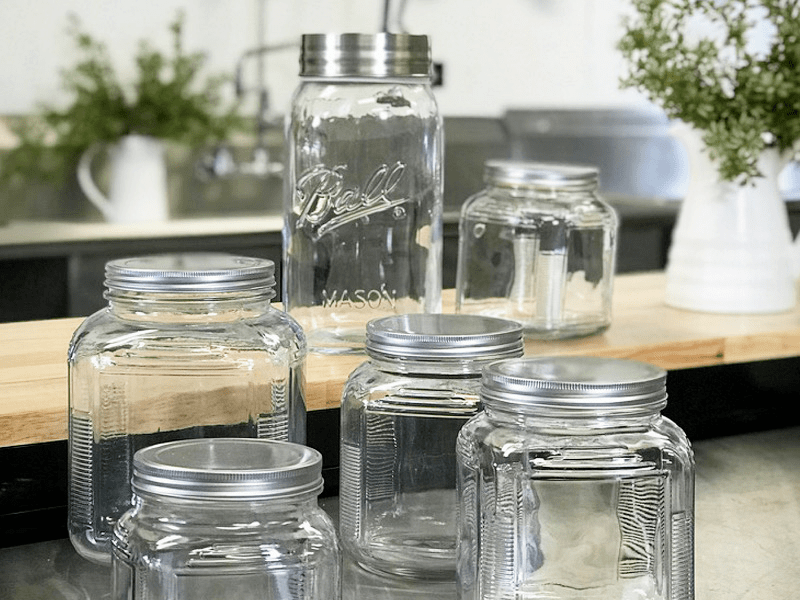
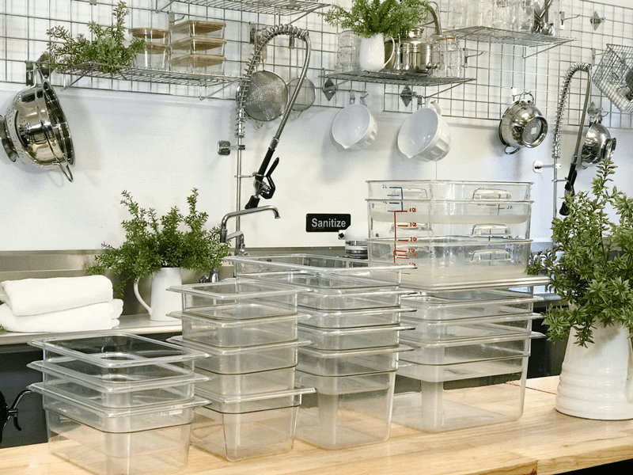
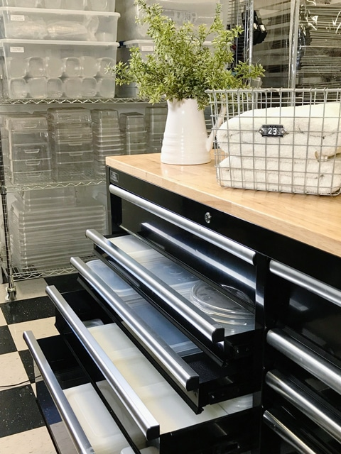
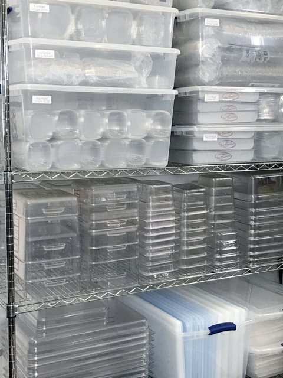
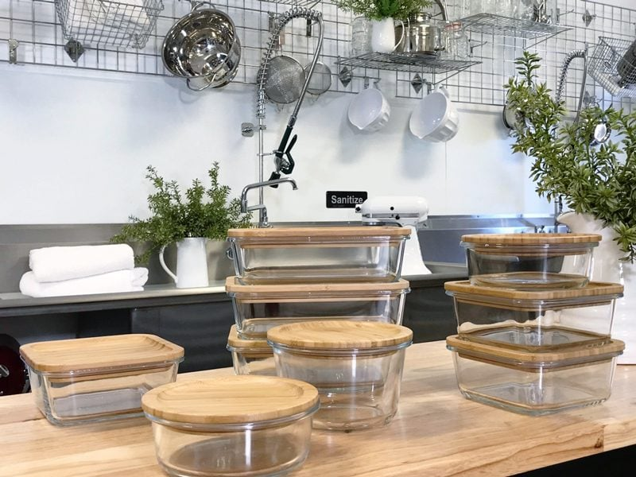

Storage Containers – Why and What I Recommend
I am often asked about ways to save time in the kitchen. Organizing your pantry is just one way to reduce the amount of time spent finding ingredients and using glass containers that either stack or line up on the shelves will speed things up as well. It allows your eyes to glance at everything, taking inventory of what you have on hand. Below, I will be sharing what containers I use to store foods in my fridge, freezer, and pantry.

Pantry and Cabinets
Use clear, food-safe containers to streamline the inside of your cabinets. Group together things like sweeteners, flours, dried fruits, etc., then put them into the appropriately-sized containers to avoid them being scattered all over the cabinet.
I typically use glass jars for all my food storage. They can be as simple as mason jars, or you can get creative and select jars that aesthetically compliment your decor. There is something calming about opening the pantry door and being able to quickly identify what you have on hand within minutes, if not seconds.
I fell in love with these affordable storage jars which can be purchased at Wal-Mart or through Amazon. I will post a link below so you can check them out. I created the labels myself using a printer, the Print Shop 3 program, and full sheets of sticker paper. These sheets allowed me to cut them to size. The jars seal and keep things fresh. Great for everyday use items.
Fridge & Freezer-Safe Containers
Jars (freezer-safe ones!)
When it comes to freezing food, jars can be wonderful. The only thing that you have to be careful with is in making sure they are freezer-safe. Not all mason jars are. I will provide links below on some that are indeed safe to use in the freezer. The drawback with jars is that they don’t stack, so it depends on how much freezer space you have.

Cambros
When jars are not optimal to use, I reach for my cambros. You can store your fresh fruits, vegetables, sauces, spices, ingredients, and much more in this clear food storage containers! They have a crystal clear design so you can instantly identify what’s inside, and they help keep foods fresher for longer. They can be used in the freezer, the fridge, and the pantry. Make sure that you purchase snap-on lids.
They come in different shapes, but I recommend the square-shaped containers because they can be easily stacked which is great for maximizing storage space on any shelf. I have provided links below on the ones you can purchase through Amazon. If you have a restaurant store in your town, check with them. I love those stores!
-

-
I store the smaller lids in the drawers of my tool box.
-

-
This is my set up. I store all cambros upside down to prevent dust from settling in.
Storing Leftovers
When storing leftovers in the fridge, try to replace all plastic containers with glass containers. Here’s an interesting self-discovery. Once upon a time, I used plastic food storage containers, and I would stock up when they went on sale. I had a special drawer in the kitchen that held all of these. Soon I had about thirty of these things. I was forever re-organizing this drawer trying to match lids with containers. Then one day, I decided it was time to switch to glass containers. I removed all plastic containers from the house and replaced them with about ten perfectly-sized glass ones. And that’s all that I need. Now I have extra space, and I can quickly match lids to their bases, keeping everything tidy.

Ready to Go Shopping?
Jars / Storage Containers
Jars
Cambros (lids are sold separately)
Lids for Cambros
For Leftovers
Printable Sticker Paper for Labeling
Nouveauraw.com is a participant in the Amazon Services LLC Associates Program, an affiliate advertising program designed to provide a means for us to earn fees by linking to Amazon.com and affiliated sites – at no extra cost to you.
Thank you for your support! amie sue
© AmieSue.com